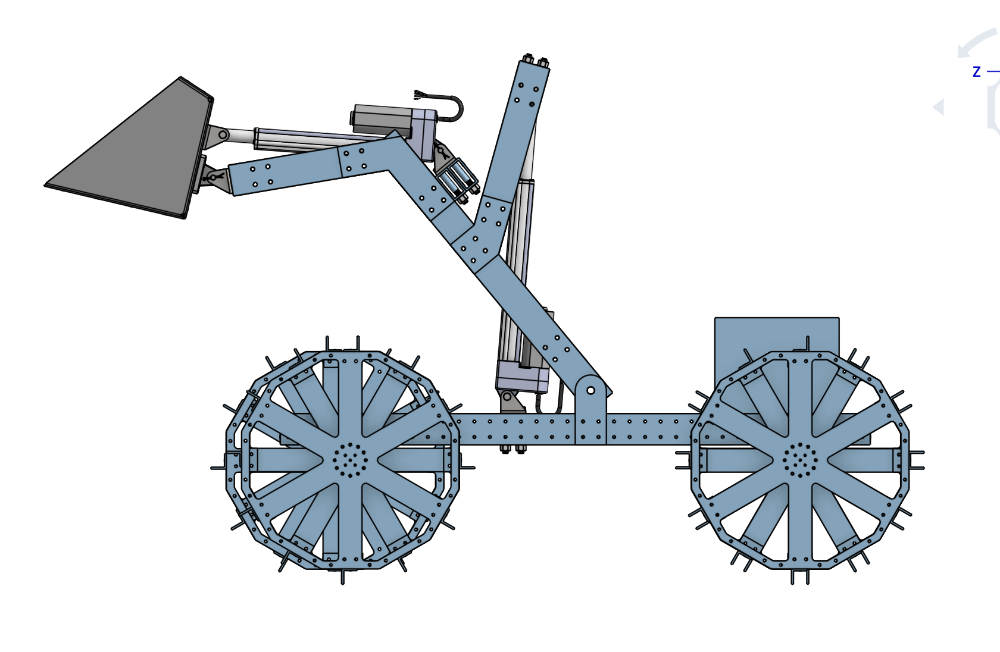
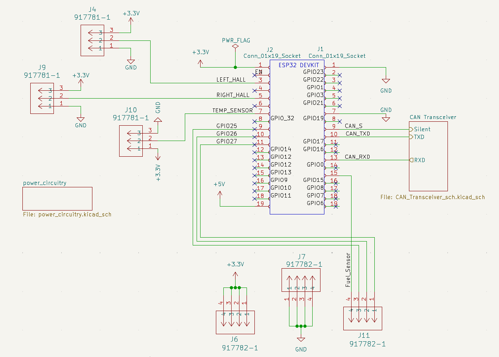
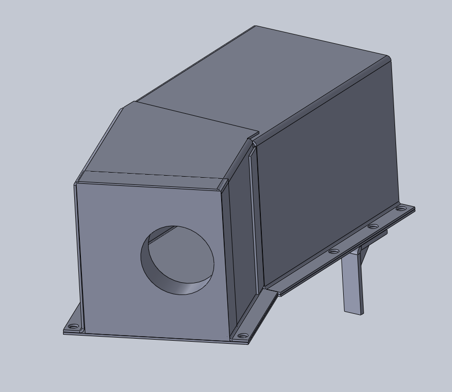

Biomedical Engineering · Robotic OCT · Autonomous Systems
Bringing robotics and sensor fusion to optical medical imaging
I'm a senior at Northwestern University studying Biomedical Engineering (3.96 GPA, Dean's List every quarter). My research interest is robotic optical coherence tomography (OCT): combining robotics, sensor fusion and image reconstruction to make optical medical imaging more capable.
Since March 2026 I've been an undergraduate researcher in the Functional Optical Imaging Laboratory (FOIL) under Prof. Hao F. Zhang. I started on cytotoxicity work for a biomedical device, then moved to building its Bluetooth communication, and I'm now working on stitching OCT images acquired along a circular scan path.
Outside the lab, I'm Software Lead for Northwestern's NASA Lunabotics team (NUSTARS), where I lead ROS2/Nav2 autonomy for a lunar excavation robot. Our first-year team won the 2026 Nova Award for Stellar Systems Engineering. This past summer I was a Robotics Software Intern at Familiar Machines & Magic, writing IMU drivers and camera managers.
Functional Optical Imaging Laboratory (FOIL), Northwestern University · PI: Prof. Hao F. Zhang
Circular OCT image stitching: developing methods to stitch optical coherence tomography images acquired along a circular scan path into a single continuous image.
Developed Bluetooth communication for a biomedical device, after initially running cytotoxicity studies for it. Trained in cell culture and animal handling techniques.
Familiar Machines & Magic · Boston, MA
Developed IMU drivers and camera managers for a robotics startup's platform, unifying three cameras behind a common interface that other services could call easily. Worked on IMU-camera sensor fusion and validated the drivers and camera managers in NVIDIA Isaac Sim before deployment on hardware.
Northwestern Space Technology And Rocketry Society (NUSTARS)
Lead autonomous navigation for a lunar excavation robot in the NASA Lunabotics competition using ROS2 and Nav2. Designed the sensor-fusion architecture combining depth cameras, IMUs and wheel encoders for GPS-denied localization. Validate and improve autonomy in simulation (Gazebo; NVIDIA Isaac Sim for the 2026-27 season). Our team won the NASA Lunabotics 2026 Nova Award for Stellar Systems Engineering by a First-Year Team.
Northwestern Motorcats (Baja SAE)
Lead and review the system architecture for the team's electronics systems and design custom sensor PCBs in KiCad. Previously on the powertrain sub-team (from Sept 2024), designing front powertrain guarding in SolidWorks and machining parts.
Hypervision Surgical · London, UK
Wrote the user manual for a latency-measurement device at a hyperspectral surgical-imaging startup.
Senior Capstone Design | Northwestern BME
Designing a low-cost, high-resolution imaging workstation for anoscopy. The current prototype pairs a Raspberry Pi HQ Camera and zoom lens with a Raspberry Pi 5, an integrated display and a stand.

Software/LV electrical Lead | NUSTARS
ROS2-based autonomous navigation for NASA Lunabotics competition, with sensor fusion for GPS-denied terrain and simulation in Gazebo and Isaac Sim. Winner of the 2026 Nova Award for Stellar Systems Engineering by a First-Year Team.
Learn More →
Electronics Team | Motorcats Baja SAE
Comprehensive telemetry system for competition off-road vehicle. ESP32-based real-time sensor monitoring with hall-effect wheel speed sensors, CAN bus integration.
Learn More →
Design & Manufacturing | Motorcats Baja SAE
Designed and fabricated 6061-T6 aluminum protective guarding for front powertrain components. Optimized for SAE safety compliance, impact resistance, and weight minimization. Passed technical inspection on first attempt.
Learn More →B.S. Biomedical Engineering
Westminster School · London, England · Class of 2024
A-Levels: A* in Mathematics, Further Mathematics, Chemistry, French, Electronics; A in Biology
Electronics Student of Year Prize (2022, 2023)
French (Native) · English (Native) · Spanish (Beginner)